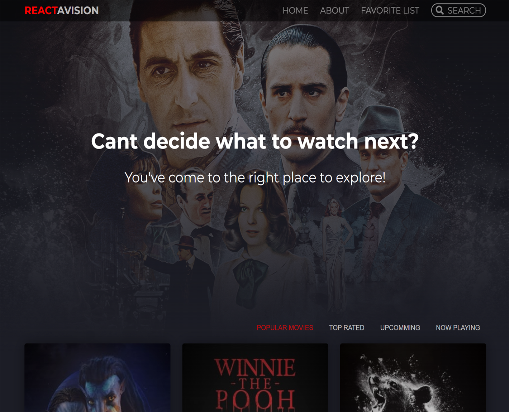

About Me
I graduated from University of Transportation in Korea in 2012 with a degree in computer science. My professional experience includes working as a junior Java web developer for 2 years, maintaining the intranet at the Korean Ministry of Strategy and Finance. I used Oracle, Java, and the Spring Framework extensively in this role, which allowed me to gain deep knowledge of these technologies and build upon my database design and management skills.
I will be graduating from the SSD program in May 2023 and I have focused on using dynamic programming languages such as JavaScript and its frameworks to efficiently manipulate HTML, CSS, and data. I have also developed well-structured object-oriented programs using C#, and data-driven applications with C# and ASP.NET. Additionally, I have experience developing secure websites that manage user profiles, data, and resources in a safe manner for site users and owners, as well as developing mobile applications using cross-platform compatible frameworks.
Work Experience
-
Homestay Coordinator - SWITCanada Ltd, Vancouver, Canada
Jun 2016 – Mar 2020
- Managed students' transition to life in Canada
- Prepared business papers
- Completed student Homestay placements
- Guided and advised students and their host families
-
Junior Java Developer - IG Corporation, Daejeon, South Korea
Jan 2013 - Jan 2015
- Collected, organized, and maintained problems
- Emulated or reproduced technical problems encountered by users
- Communicated electronically and in-person with computer users experiencing difficulties to determine and document problems experienced
- Planned, designed, modified, integrated, and tested website-related code
Projects
-
Cake Pactory - BCIT Internal Project
developed a website that sells cakes and allows the user to manage customers and customer orders. Additionally, the admin has the ability to manage cake items, sizes, fillings, shapes, and toppings
-
Movie App - React Project
This project is a movie introduction service that gives users access to the extensive TMDB movie library. This indicates that the website has access to a comprehensive database of movies from TMDB, which means that users can browse and explore a variety of movie information, including titles, genres, release dates, and ratings.
Skills
- Languages : C#, Java, PHP, HTML, CSS, JavaScript, jQuery, SQL, Swift, Python
- Frameworks : ASP.NET Core (Web API and MVC), Android, iOS, Angular, Node.js, React
- Databases : MS SQL Server, MySQL, MongoDB, CockroachDB
- Tools : Amazon Web Services, Photoshop, GitHub